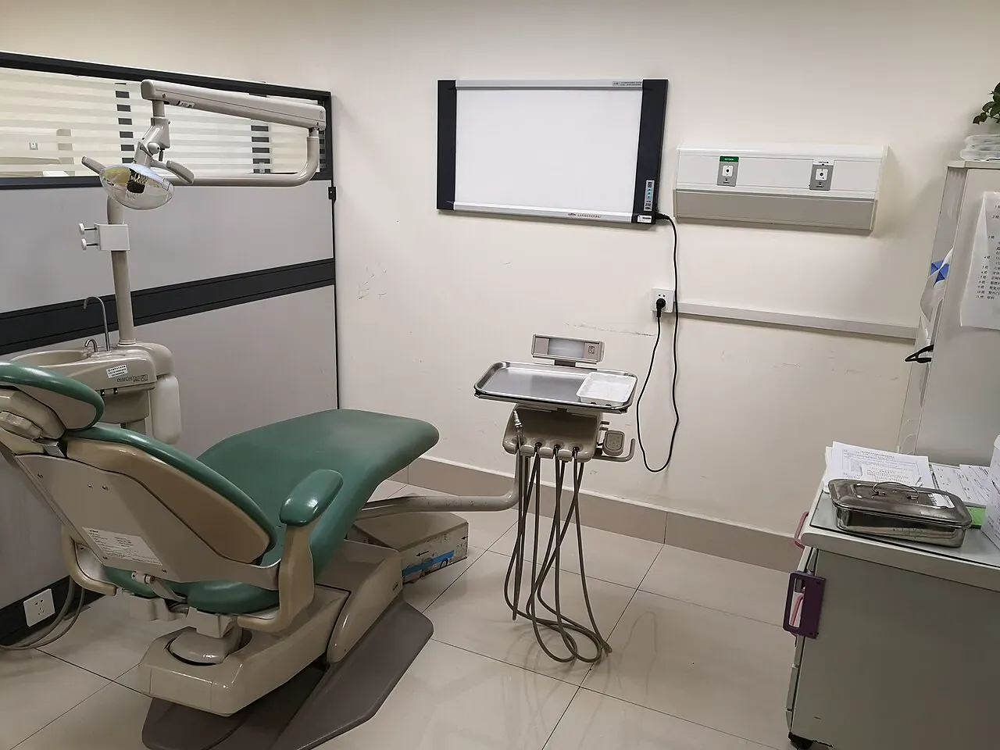
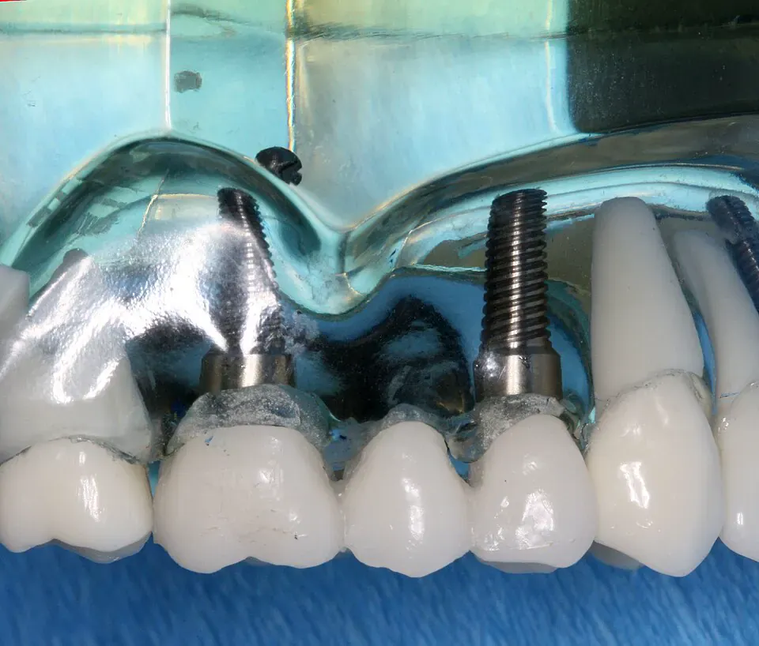
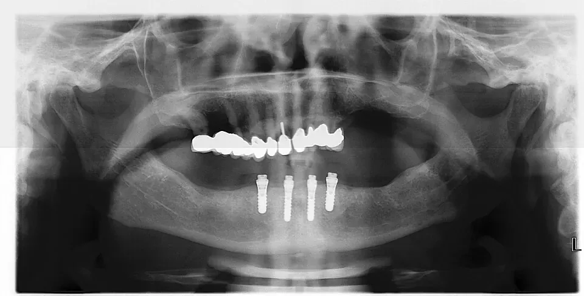
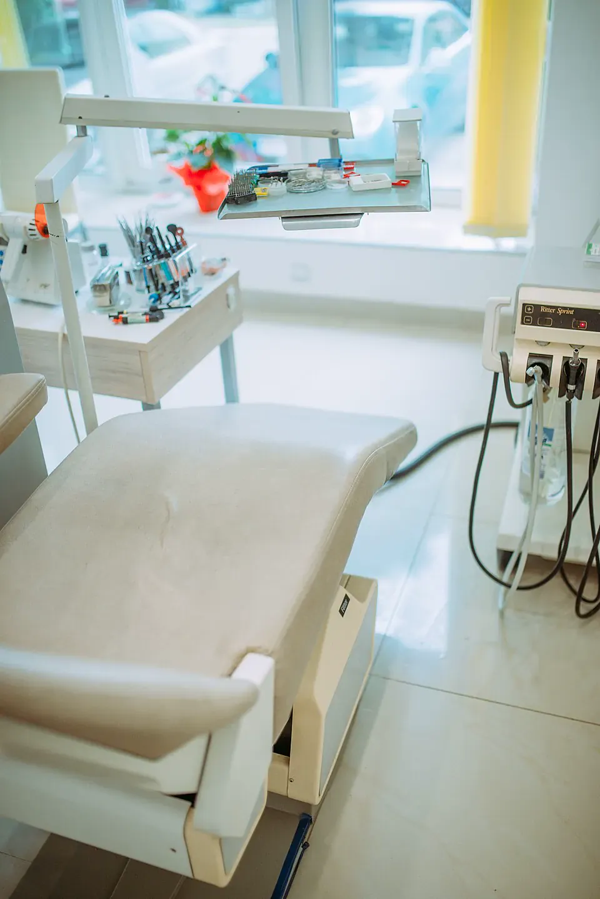
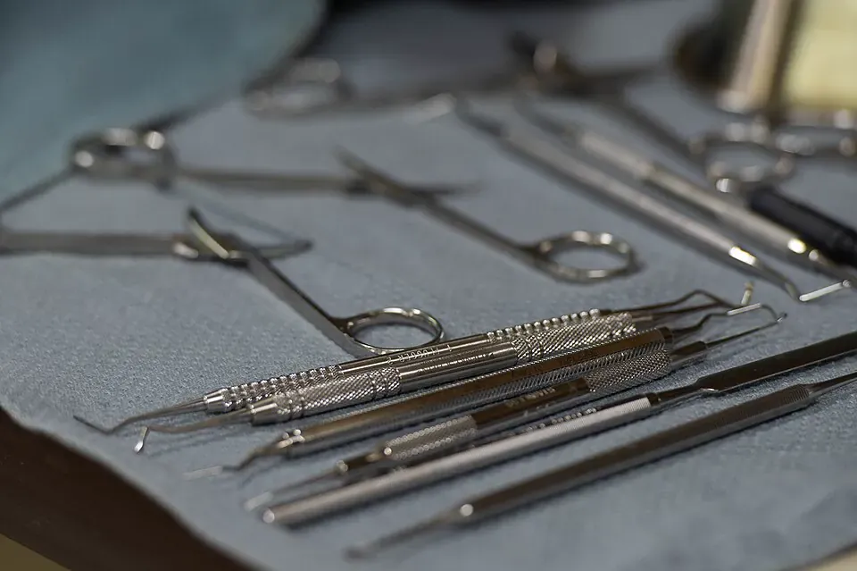

Borgo Roma · Verona Sud
Impianti dentali: alla prima visita la panoramica la facciamo in studio
In 45 minuti il dentista ti visita, guarda la radiografia con te e ti spiega le strade possibili. Esci con piano di cura e preventivo scritti, voce per voce.
- Radiografia panoramica fatta in studio, lo stesso giorno
- Preventivo scritto: impianto, corona e controlli, ogni voce con il suo prezzo
- La visita non ti impegna all’intervento

45 minutila prima visita
In studiola radiografia panoramica
Per iscrittopiano di cura e preventivo
Verona Sudin Borgo Roma
Quando serve un impianto?
Un impianto è una vite in titanio che prende il posto della radice. Sopra si fissa il dente nuovo, che non si toglie. Di solito se ne parla quando:
- ti hanno tolto un dente e lo spazio è rimasto vuoto
- il ponte si muove o il dente che lo regge è da togliere
- la protesi mobile si sposta quando mangi o parli
Se l’impianto è la strada giusta per te lo dice solo la visita, guardando osso e gengive.

Come funziona
Dopo la prima visita decidi tu se andare avanti.

Visita e panoramica
Il dentista guarda bocca e gengive; la panoramica mostra quanto osso c’è.

Piano e preventivo scritti
Ti spieghiamo le strade possibili e i tempi, poi ti diamo tutto per iscritto.

Intervento e controlli
In anestesia locale; il dente fisso arriva quando l’osso è guarito.
Chi ti visita
Qui vanno la foto vera del direttore sanitario, il nome, i titoli e l’iscrizione all’Albo. Sono informazioni permesse e danno fiducia. Niente recensioni di pazienti o foto prima/dopo: nella pubblicità sanitaria vanno evitate.
Cosa c’è nel preventivo
- ImpiantoLa vite in titanio, con la sua marca
- Moncone e coronaIl pezzo che collega e il dente in ceramica
- Innesto d’ossoSolo se la panoramica dice che serve
- ControlliLe visite del primo anno dopo l’intervento
Domande frequenti
L’intervento fa male?
Si fa in anestesia locale. Nei giorni dopo può esserci gonfiore, che di solito passa con gli antidolorifici indicati dal dentista.
Quanto costa un impianto?
Dipende da quanti denti mancano e dall’osso. Per questo il prezzo te lo diamo dopo la panoramica, per iscritto. Il costo della prima visita te lo dice la segreteria quando ti richiama.
Quanto dura il percorso?
L’osso guarisce intorno all’impianto in alcuni mesi, poi arriva il dente fisso. I tempi del tuo caso sono scritti nel piano.
Chi non può fare l’impianto?
Con poco osso serve prima un innesto. Fumo, diabete non controllato e alcune terapie aumentano i rischi: ne parli alla visita.
Ho già una panoramica recente
Portala: se è di pochi mesi fa e si legge bene, la usiamo.
Richiedi la prima visita
Un minuto per il modulo: la segreteria ti richiama entro un giorno lavorativo.